KLD is non-symmetric
这是一个关于 KL 散度（Kullback-Leibler Divergence） 核心概念的非常好的问题。理解这两个方向的差异，是理解变分推断（VI）和生成模型（如 VAE 和 GAN）的关键。
这个表达式是以真实数据分布 $P_D$ 为权重计算期望的。
💡 类比： $P_M$ 就像一个广撒网的捕鱼人。他最害怕的是错过任何一个鱼群（$P_D$ 的模式），所以他会尽力扩大他的网（$P_M$ 的分布范围），即使这会捕到一些无关的杂物（在 $P_D$ 低密度区分配概率，导致生成样本模糊）。
这个表达式是以模型分布 $P_M$ 为权重计算期望的。
💡 类比： $P_M$ 就像一个精准瞄准的狙击手。他最害怕的是射偏（在 $P_D$ 的低密度区分配概率），所以他只会瞄准他能确保命中的一个或几个最清晰的目标（$P_D$ 的高峰）。这导致他可能会错过其他模式，但确保了极高的精度。
Encode: x -> d-dim vector h
Predict:
z=Wh + b (z is logits)
Use softmax to map z to probability P(y|x).
防止softmax exlode: normal softmax 分子分母同时除以 $e^{max}$
Traning:
use cross entropy loss
use SGD:
neural nets we don’t have a closed-form optimal solution
minibatch is much faster and effective, also have some regularization effect
MLP
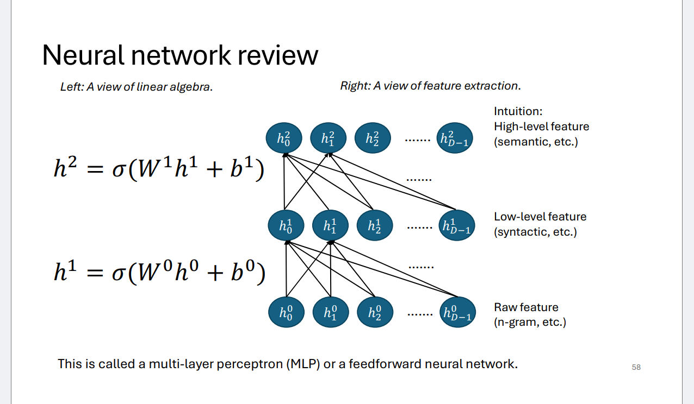
A simple way to encode a sentence:
a |V|-dim vector, the i-th dimension indicates whether the i-th word in V(vocabulary)
exists in x
注意：The difference with LSA and word2vec is that here the word embedding
matrix is treated as part (the first layer) of the parameters of the NN model. But indeed, you can use word2vec/LSA (trained on larger data without label)
to initialize this matrix.
A linear transform $y=Wx$, stacking linear transfroms is still a linear transform.
Chain Rule
one hot： 只有真实的label为1，其他的全0
proof： $\mathcal{L}(\mathbf{z}, \mathbf{\tilde{y}}) = -\sum_{j=1}^K \tilde{y}_j \log(\hat{y}_j)$
$\mathbf{\hat{y}} = \text{softmax}(\mathbf{z})$。其中 $\hat{y}j = \frac{e^{z_j}}{\sum{k=1}^K e^{z_k}}$。
利用对数性质 $\log(A/B) = \log A - \log B$：
求导：
回代 Softmax 的定义 $\hat{y}c = \frac{e^{z_c}}{\sum{k=1}^K e^{z_k}}$：
因为 $i=c$，所以 $\tilde{y}_i = 1$。
求导（注意 $-z_c$ 项对 $z_i$ 的导数为 0）：
回代 Softmax 的定义 $\hat{y}i = \frac{e^{z_i}}{\sum{k=1}^K e^{z_k}}$：
因为 $i \neq c$，所以 $\tilde{y}_i = 0$。
训练的时候随机失活： 在处理每个 mini-batch 数据时，神经网络中的每个神经元单元（Unit）（及其所有传入和传出的连接）都会以一个预设的概率 $p$ 被随机地“丢弃”或失活。
At test time, all units are present,
but with weights scaled
by p (i.e. w becomes pw)
parallel computing: For a minibatch of input, we can
concat them into a input matrix. Matrix-vector operation now
becomes matrix-matrix
operation.
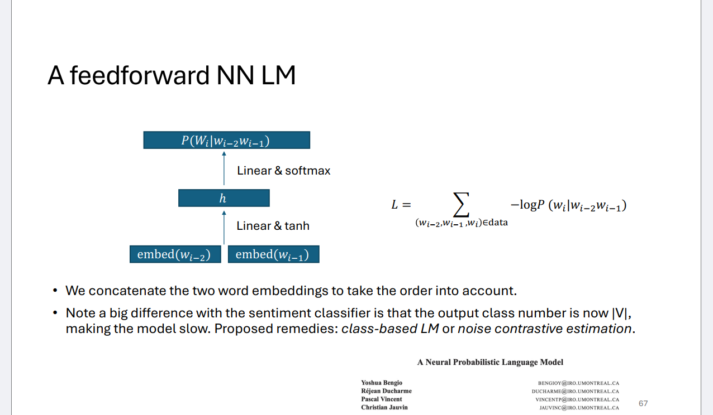
Note a big difference with the sentiment classifier is that the output class number is now |V|,
making the model slow.
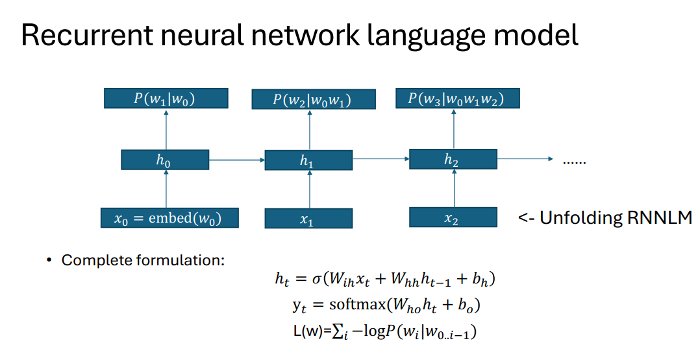
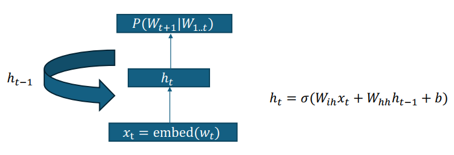
better long distance dependence： hidden states， shared $W_ih$ and $W_hh$
Back propagation through time
problem: gradient explode/ vanish
标准的 RNN 隐藏状态计算是：$ht = \text{activation}(W{hh} h{t-1} + W{ih} x_t)$。
这里简化为：$ht \approx W{hh} h{t-1} + W{ih} x_t$。
t-1次连乘导致梯度爆炸/消失
Gradient exploding is more serious because it makes training impossible，因为梯度无限大了
解决方案：gradient clipping，set the maximum norm of gradient to be $\gamma$.
parallel of rnn：parallel across scentence
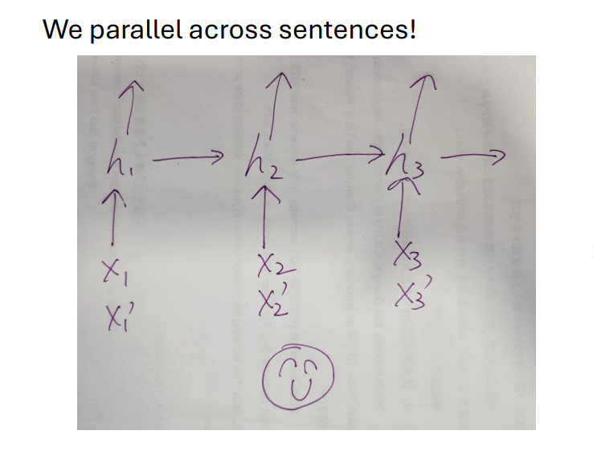
parallel traning: use padding to get same scentence length
you can also design a cnn to deal with variable seqlen
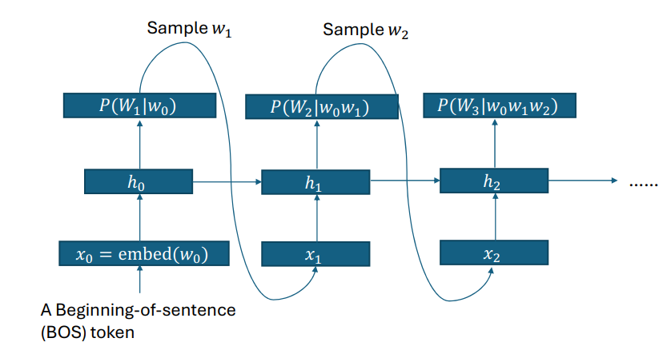
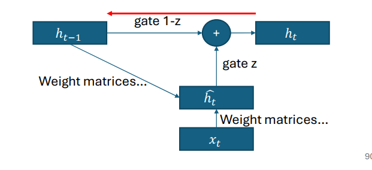
resnet
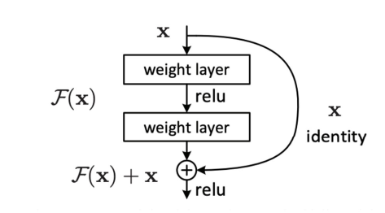
cannot be applied to AR-LM, because we cannot uitilize the information from the future. 最终的hidden state必须等到所有计算全部结束之后才能完成。
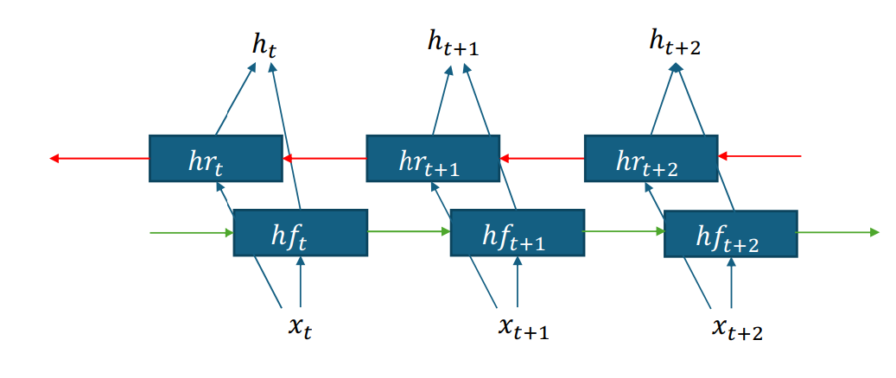
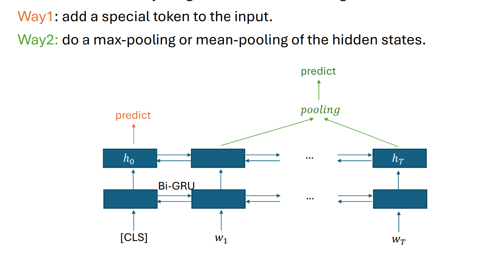
scentence-encoding: 句子最开始加一个特殊的token，这个主要利用的是反向的h0
We can use a bi-rnn encoder for the input sequence, and use a uni-rnn decoder
for the output.

步骤一：计算对齐分数 (Alignment Score)
步骤二：计算注意力分布 (Attention Distribution)
$$a = \text{softmax}(\tilde{a})$$
步骤三：计算上下文向量 (Context Vector)
$$c_t = \sum_{i} a_i h_i^{enc}$$
autoregressive，每一次都选择局部最优的，所以不一定是全局最优的
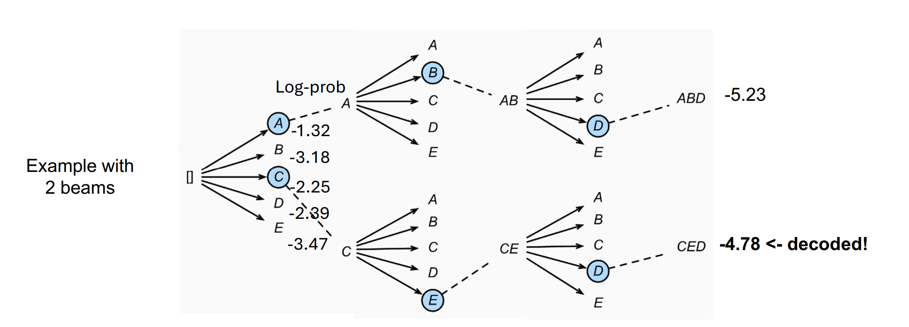
// 步骤 1: 初始化
// 初始化集束 (beams)。集束是一个列表，存储当前得分最高的 B 个候选序列。
// 格式：[(序列, 累积对数概率得分)]
beams = [["<s>", 0]]
// 初始序列为起始符号 "<s>"，累积得分为 0。
// 步骤 2: 迭代生成序列
// L 是目标序列的最大长度。循环从 t=1（生成第一个词）到 L。
for t from 1 to L:
// 初始化一个新的集束列表，用于存储当前时间步 t 扩展后的所有新序列。
new_b = []
// 遍历当前集束中的所有 B 个候选序列。
for b in beams:
// 解构当前候选序列：his 是历史序列，score 是它的累积对数概率得分。
his, score = b[0], b[1]
// 使用语言模型 (LM) 预测下一个词的概率分布。
// logprob 存储基于 his 得到的词汇表所有词的对数概率。
logprob = LM-NextPredict[his]
// 从 logprob 中选择概率最高的 k=B 个词汇及其对数概率。
// idx_s: 这 B 个词汇在词汇表中的索引。
// logprob_s: 这 B 个词汇对应的对数概率。
idx_s, logprob_s = top-k(logprob, k=B)
// 步骤 3: 扩展序列并计算新得分
// 遍历这 B 个最佳的下一个词汇。
for j from 0 to (B-1):
// 扩展序列：将新的最佳词 V[idx_s[j]] 添加到历史序列 his 后面。
// V 是词汇表 (Vocabulary)。
// 更新得分：新得分 = 旧得分 + 新词汇的对数概率 (因为 log(P1*P2) = log(P1)+log(P2))。
new_b.append((his + V[idx_s[j]], score + logprob_s[j]))
// 步骤 4: 筛选和更新集束
// 对 new_b 中的所有序列（当前有 B*B 个）按得分（score）进行降序排序。
// 只保留得分最大的 B 个序列。
sort and only keep B sequences in new_b with largest score.
// 用筛选后的 B 个最佳序列更新 beams，进入下一轮迭代。
beams = new_b
// 步骤 5: 返回结果
// 循环结束后，beams 中存储了长度为 L 的 B 个最佳序列。
// 返回得分最高（排在第一位）的序列。
return beams[0]
关键；每一次一个node都会生成b个分支，但我们只保留得分最大的b个
简洁惩罚用于惩罚那些比参考译文短的机器译文，以确保翻译的长度合理。
BLEU 最终得分是简洁惩罚和几何平均 $n$-gram 精准度的乘积。
Given a decent amount of bilingual data (X, Y) and a good amount
monolingual data in target language Y.
• Q: What can you do to create more paired bilingual data?
• You can train a backward model Y->X, and conduct generation on
the monolingual data. That’s called back translation.
The General Language Understanding
Evaluation , human level
SuperGLUE, harder
ELMo (Embeddings from Language Models): build
deep contextualized word representation.
Model: multilayer bidirectional LSTM
Objective: predict the next word in both
directions independently; i.e., left-to-right
and right-to-left
• (1) Start with a unigram vocabulary of all characters in the data.
• (2) Each iteration: In the data, find the most frequent pair, merge it,
and add to the vocabulary.
• (3) Stop when vocabulary is of pre-determined size (e.g., 50k).
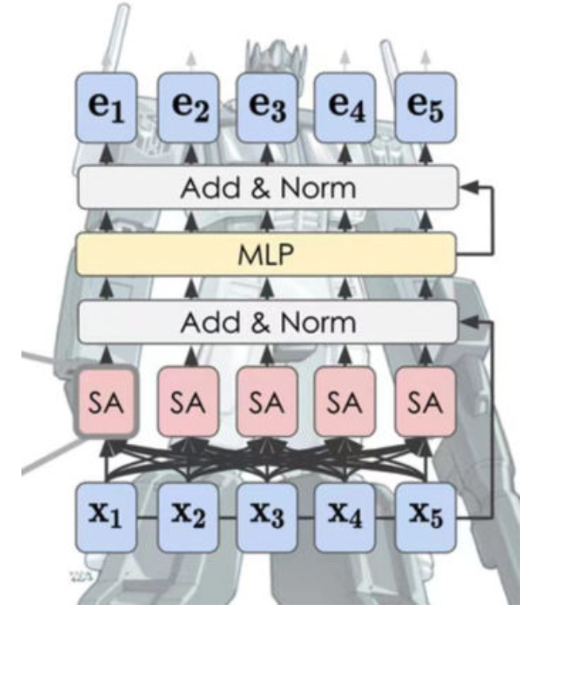
q, k, v 均为 Wx
计算第 $i$ 个位置的查询向量 $\mathbf{q}i$ 对所有键向量 $\mathbf{k}$（其中 $$ 代表句子中的所有位置）的注意力权重的公式如下：
divide $\sqrt{\text{dim}_k}$, normalize the variance, achieve more stable and smooth softmax output.
$Z = softmax(\frac{QK^\top}{\sqrt{dimk}})V$ parallel computation
class LayerNorm(nn.Module):
def __init__(self, features, eps=1e-6):
super(LayerNorm, self).__init__()
self.a_2 = nn.Parameter(torch.ones(features)) #参数
self.b_2 = nn.Parameter(torch.zeros(features))
self.eps = eps #一个很小的数，防止除以0
def forward(self, x):
# x:(seqlen,feature)
mean = x.mean(-1, keepdim=True)
std = x.std(-1, keepdim=True)
return self.a_2 * (x - mean) / (std + self.eps) + self.b_2
conbined with resnet:
$h_{out}=F(layernorm(h))+h$
batchnorm往往需要batchsize比较大，但当我们训大语言模型的时候batchsize可能达不到那么大。而且qkv的维度d是确定的，但seqlen不确定，所以layernorm更加适合sequence model。
每一个head一套qkv的权重矩阵，最后concat再linear
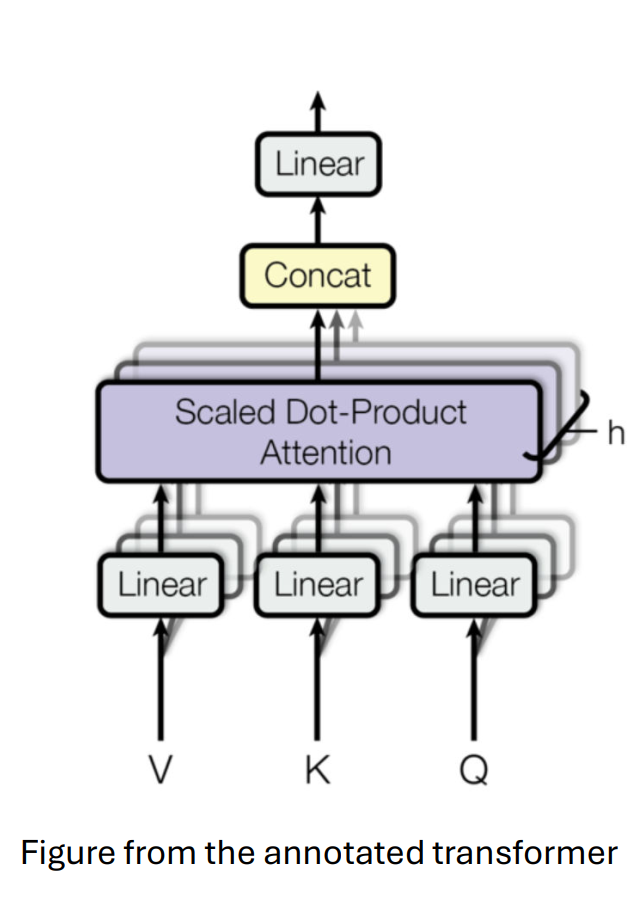
Without RNN, attention alone does not
have order information!
Exercise: Given any $\text{pos}$ vector and a fixed number $k$, can you represent $\text{pos} + k$ as a linear transform of $\text{pos}$?
Hint: $\sin(A+B) = \sin A \cos B + \sin B \cos A$
这里的 $\text{pos}$ 是指位置 $pos$ 的位置编码向量，而 $\text{pos}+k$ 是指位置 $pos+k$ 的位置编码向量。
假设位置编码向量的第 $i$ 个维度分量定义如下：
其中 $\omega_i$ 是与维度 $i$ 相关的固定频率项。
现在，我们来看位置 $\text{pos}+k$ 的第 $i$ 个分量：
利用提示中的三角恒等式 $\sin(A+B) = \sin A \cos B + \sin B \cos A$，其中 $A = \omega_i \cdot \text{pos}$，$B = \omega_i \cdot k$：
We usually start with a large learning rate (lr),
and then decay over time.
For transformer models, it is very useful to set a
small warmup stage, where we first gradually
increase lr from zero to the starting value.
Without this trick, training is likely to get stuck.
pretrained with self
supervised training, no labels!
Two major objective used in BERT pretraining:
• Masked language modeling (MLM)
• Next sentence prediction (NSP)
Randomly mask (via a [mask] token)
15% of the tokens in each sequence.
Ask the transformer model to
predict the masked token on the top
layer via standard cross-entropy loss.
| 特性 | 掩码语言建模 (MLM) - BERT | 连续词袋模型 (CBOW) - Word2Vec |
|---|---|---|
| 模型架构 | 深层 Transformer 编码器 (Deep Transformer Encoder)。 | 浅层 神经网络 (Shallow Neural Network)。 |
| 训练目标 | 预测 输入序列中被 [MASK] 标记随机替换的词元。 |
预测 窗口内缺失的 目标词语，根据其周围的上下文词语。 |
| 上下文利用 | 利用 双向上下文 (左侧和右侧) 以及 整个序列 的信息。依赖 Transformer 的 自注意力机制 来捕捉远距离依赖。 | 仅利用固定大小窗口内的上下文词语。将上下文词语视为“词袋”，通常通过求和或平均它们的向量来表示上下文。 |
| 词序敏感性 | 敏感。 由于使用了 Transformer 架构和位置编码，模型知道词语的先后顺序。 | 不敏感。 因为它将上下文词语视为一个“袋子”进行处理 (求和/平均)，丢失了词语的先后顺序信息。 |
| 输出结果 | 语境化/动态嵌入 (Contextualized/Dynamic Embeddings)。 同一个词在不同句子中的含义不同，其向量也不同。 | 静态嵌入 (Static Embeddings)。 无论出现在什么语境中，一个词语都只有一个固定的向量表示。 |
| 处理多义词 | 出色。 能区分多义词的不同含义（例如，“银行”作为金融机构和“河岸”的含义）。 | 较弱。 无法区分多义词的不同含义，会为所有语境下的多义词学习同一个向量。 |
Problem: If we only add loss for
masked tokens, then the
transformer would not build
good representations for nonmasked tokens.
For 10% of the time, we replace
[M] with a random token.
For another 10% of the time, we
do not change the original token.
80% remaining time, the mask token is used.
In addition to MLM, we also add a [CLS]
token and ask BERT to predict whether
sentence2 is the next sentence of
sentence1.
[CLS] 来分类，[SEP] 来分割句子
BERT finetuning cont.
• After pretraining, we slightly modify the top layers of BERT and
tune it on downstream tasks
top layer: 输出 $T$ 的层
生成器 (Generator)
cooked 被 [MASK]，生成器可能会预测出 ate，然后用 ate 替换原词。判别器 (Discriminator) - ELECTRA 模型本身
This new pre-training
task is more efficient
than MLM because the
task is defined over all
input tokens rather than
just the small subset
that was masked out.
每个 Token 的计算量： 对于序列中的任意一个 token（查询 Q），它只需要计算与它局部窗口 $w$ 内的其他 $w$ 个 token（键 K）的注意力得分, $O(w)$。 总计算量 $\approx n \times O(w) = O(n \cdot w)$。
For an embedding
on layer L, what’s its receptive field?
(how many input tokens does it
cover?)
Lxw
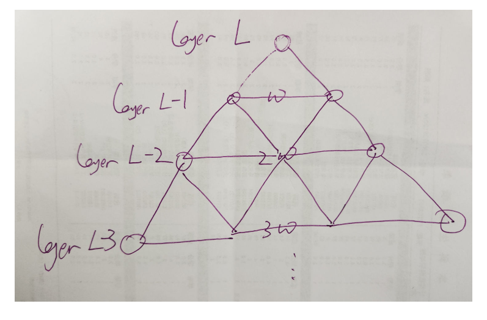
Combined with dilated sliding window
We can add gaps in the window to make it
even wider with the same amount of compute(捕捉长距离依赖)
We can use a combination of 2 heads of
dilated and other heads with local sliding
window.（用multihead实现短距离长距离结合）
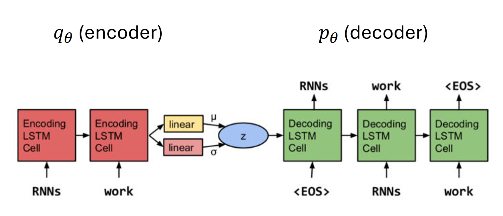
| 组件 | 名称 | 功能 | 结构 |
|---|---|---|---|
| $q_{\phi}$ (Encoder) | 编码器/后验模型 | 接收输入句子 $\mathbf{x}$，将它压缩成一个潜在语义向量 $\mathbf{z}$ 的分布。 | 1. $\text{RNNs}$ (LSTM Cell): 编码整个句子 $\mathbf{x}$。 2. Linear Layers: 根据 $\text{RNN}$ 的最终隐藏状态，输出潜变量 $\mathbf{z}$ 分布的参数 $\mu$ (均值) 和 $\sigma$ (方差)。 |
| $\mathbf{z}$ | 潜在变量 (Latent Variable) | 一个连续的低维向量，代表整个句子的全局语义。 | 从 $\mathbf{z}$ 的分布中采样得到。 |
| $p_{\theta}$ (Decoder) | 解码器/生成模型 | 接收 $\mathbf{z}$ 作为输入，并逐字生成（重构）句子 $\mathbf{x}$。 | 1. $\text{RNNs}$ (LSTM Cell): 接收 $\mathbf{z}$ 作为初始状态或输入。 2. 生成过程: 从起始符号（如 <EOS> 在图中似乎被误置，通常是 <BOS> 或 $\mathbf{z}$）开始，逐步生成 $\text{work} \rightarrow \text{work} \rightarrow \text{ |
生成新句子时，我们只使用解码器 $p_{\theta}$：
$\text{ELBO}$ 的值小于或等于数据的对数边缘似然 $\log p(\mathbf{x})$：
因此，最大化 $\mathcal{L}(\theta; \mathbf{x})$ 就是在最大化 $\log p(\mathbf{x})$ 的一个下界，从而间接优化了整个模型。
推导的目标是找到 $\log p(\mathbf{x})$ 的一个下界，我们称之为 $\mathcal{L}(\theta; \mathbf{x})$ 或 $\text{ELBO}$。
在 $\text{VAE}$ 训练中，我们通过最大化这个 $\text{ELBO}$ 目标函数，间接实现了对真实数据分布 $p(\mathbf{x})$ 的建模。
从 KL 散度的定义开始：
将对数中的除法分解为减法：
根据贝叶斯定理 $p(\mathbf{z}|\mathbf{x}) = \frac{p(\mathbf{x}, \mathbf{z})}{p(\mathbf{x})}$，我们有 $\log p(\mathbf{z}|\mathbf{x}) = \log p(\mathbf{x}, \mathbf{z}) - \log p(\mathbf{x})$。代入上式：
将期望中的 $\log p_{\theta}(\mathbf{x})$ 移出（因为它与 $\mathbf{z}$ 无关，期望值就是它本身）：
重新排列各项：
最后，我们将前两项合并，得到 ELBO 的定义：
所以，我们最终得到这个关键等式：
the second term involves a sampling operation from the
parameterized q, which we can not directly back-prop
在引入重新参数化技巧之前，我们计算重构项的梯度是这样的：
当我们使用蒙特卡洛采样来近似这个期望时：
问题核心在于：
重新参数化技巧就是通过重写随机变量的生成过程，将随机性（$\epsilon$）和参数依赖性 ($\phi$ 通过 $\mu, \sigma$) 分离，从而创建一条可导的路径 (pathwise gradient)：
现在的计算图是：
由于 $\mathbf{z}$ 现在是 $\phi$ 的一个确定性函数（通过 $\mu$ 和 $\sigma$），我们可以直接使用链式法则求导：
注：$\frac{\partial \mathbf{z}}{\partial \sigma} =\epsilon$
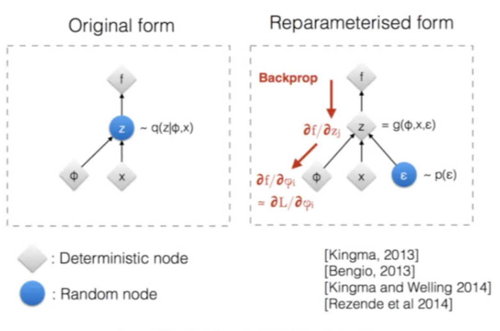
KL term quickly decrease to zero
(throwing away latent information)
Comparing to the second term, the KL-prior term is easier to optimize
(why?).
• The RNN decoder is strong and has ground-truth history in its input.